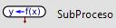
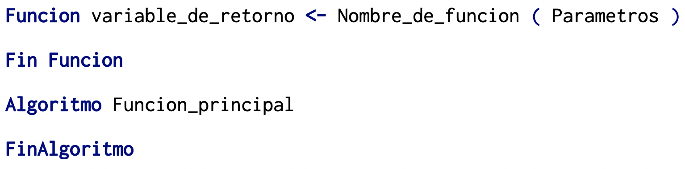
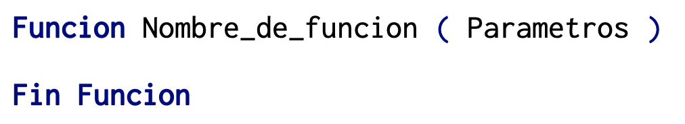
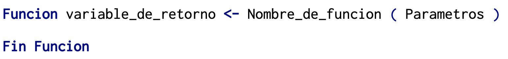
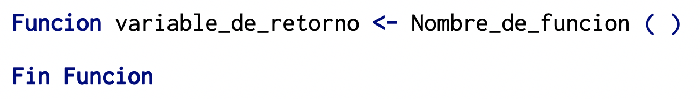
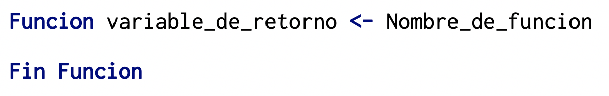

Semana 7
🧑🏻💻 🏋🏻 Seguimos practicando ciclos 🫠
Funciones / Subprocesos en pseint
Introducción
En programación es muy frecuente hacer uso del algoritmo "Divide y venceras",
el cual consiste en resolver un problema difícil, dividiéndolo en
subproblemas más sencillos de resolver (tantas veces como sea necesario),
cada uno de estos subproblemas realizan una tarea especifica a la vez y
su implementación es mediante funciones dentro del algoritmo.
En PSeInt las funciones son también llamadas Subprocesos
.
Un subproceso es una instrucción que permite agrupar variables y sentencias, cuya finalidad es la de ejecutar
una tarea especifica, se pueden añadir una o varias funciones, en un algoritmo,
en esencia las funciones son subprogramas dentro de un programa, que se pueden invocar
(ejecutar) desde cualquier parte del programa, es decir, desde otra función,
desde la misma función o desde el programa principal, cuantas veces sea necesario.
En general, la sintaxis de un subproceso en PSeInt es:

donde:
- Variable_de_retorno: Si el subproceso o función, calcula y devuelve un valor,
se debe colocar el nombre de la variable que se utilizará para almacenar ese valor;
si el subproceso o función no devuelve nada se puede eliminar la variable con su
operador de asignación .
- Nombre_de_funcion: Es el nombre que recibirá el subproceso o función.
- Parametros: Los parametros son variables que requiere la función,
utilizando comas para separarlos, si el subproceso o función no requiere
parametros puede dejarse en blanco, y de manera opcional omitir los paréntesis.
Definición
- Si el subproceso no retorna ningun valor, se dice que es un procedimiento.

- Si el subproceso retorna un valor se le conoce como función.

- Si el subproceso no recibe parametros se pueden colocar los parentesis vacios u omitirse:


Observación
Enseguida se enlistan algunos aspectos importantes que debemos tener en cuenta
cuando se utilizan subprocesos:
- Para invocar o llamar a un subproceso se debe utilizar el nombre del subproceso y
entre parentesis sus argumentos (en caso de ser necesario) separados por comas.
- Llamar a un subproceso provoca que este se ejecute.
- Los argumentos deben coincidir con los parametros en cantidad y tipo.
De igual manera, la variable de retorno debe coincidir con la variable
que recoge dicho valor en el proceso desde el cual fue invocado el subproceso.
- Cuando las instrucciones del subproceso se han realizado, el control regresa
al punto desde el que se llamo en el programa principal o utro subproceso.
- Los argumentos de un subproceso serán definidos en el proceso que realice la llamada, y por lo tanto
el subproceso los recibira con el mismo tipo de dato ya definido. Por esta razon, no se debe volver
a definir el tipo de dato de la variable que es argumento dentro del subproceso.
Variables globales y locales
Introducción
Las variables son objetos que pueden cambiar su valor durante la ejecución de
un algoritmo. En general se distinguen dos tipos de variables: locales y globales.
- Las variables locales son objetos definidos en el proceso principal así como en los subprocesos y su alcance está
limitado solamente al proceso principal o a los subprocesos donde están definidas. Esto es,
las variables son locales a cada proceso o subproceso donde han sido definidas o declaradas, y se pueden usar
solamente en ese proceso o subproceso. Si se intenta hacer uso de dicha variable en otro proceso o subproceso donde no
ha sido declarada, PSeInt mostrará un mensaje de error. Por ejemplo, cada variable local definida en un subproceso comienza a existir sólo cuando se llama a ese subproceso,
y desaparece cuando el control regresa al proceso principal.
- Por otra parte, las variables globales son objetos definidos antes del inicio del
proceso principal y su alcance es muy amplio, ya que tienen influencia tanto en el proceso principal
como en todas las funciones o subprocesos i.e. una variable global puede ser vista y manipulada por el proceso principal y
todos los subprocesos del algoritmo. Sin embargo, hasta este momento en PSeInt no existe el concepto de variable global.
Parámetros por valor y por referencia
En PSeInt la comunicación entre las funciones/subprocesos y el proceso principal, o bien entre los
mismos subprocesos, se lleva a cabo mediante parámetros por valor y por referencia.
En la definición de los parámetros de un proceso o subproceso se pueden agregar las palabras clave:
Por Valor o Por Referencia para indicar como se pasa cada parámetro. Si se omiten,
estas palabras clave por defecto el paso será por valor a excepción de los arreglos que
se pasan siempre por referencia.
Los parámetros por valor permiten pasar datos entre el programa principal y las
funciones, e incluso entre las mismas funciones. En este método,
en el parámetro se almacena una copia de la variable original. Si el parámetro sufre
una alteración en la función/subproceso que lo recibe, la variable original no se ve afectada,
i.e. se trabaja sobre una copia del a variable (diferente espacio de memoria).
Los parámetros por referencia también permiten la comunicación entre el programa
principal y las funciones/subprocesos, o entre las mismas funciones. Sin embargo, en
este caso, en lugar de escribir una copia de la variable en el parámetro se escribe
la dirección de la misma. Si el parámetro sufre una alteración en la función que
lo recibe, la variable original también se ve afectada, i.e. se opera sobre la variable original
(se trabaja en el mismo espacio de memoria).
En PSeInt, el paso de variables por referencia se realiza agregando las palabras clave: Por referencia